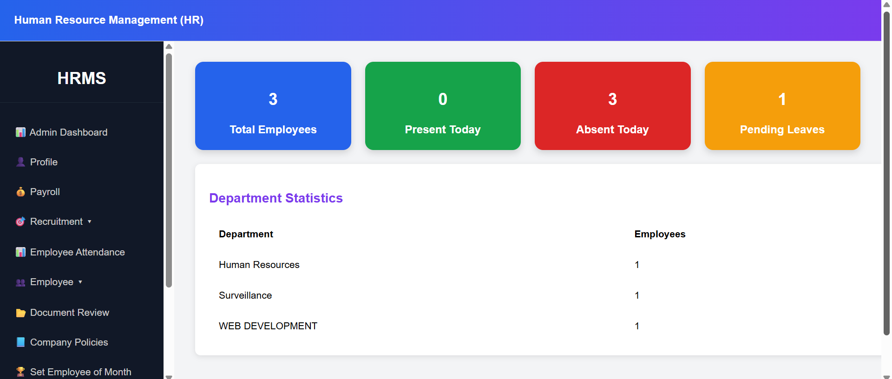
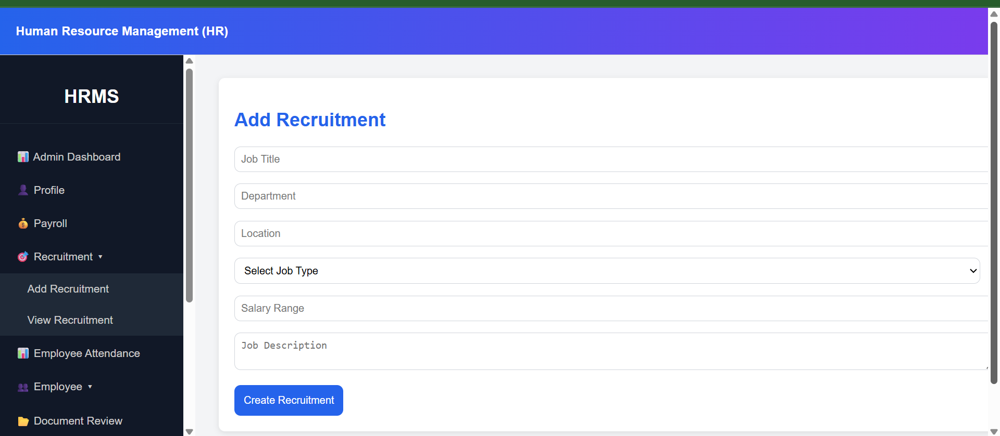

🏢 HRMS (Human Resource Management System)
Enterprise-grade full-stack application to manage employee lifecycle, payroll, attendance, and access control.



🔥 Business Problem
Organizations faced challenges managing employee data, attendance, payroll, and access permissions across disconnected systems. This led to inefficiencies, manual errors, and lack of real-time insights.
💡 Solution
Developed a centralized HRMS platform integrating employee management, attendance tracking, payroll processing, and role-based access control into a single scalable system.
📈 Business Impact
- Improved operational efficiency across HR processes
- Reduced manual work and data inconsistencies
- Enabled real-time employee data access
- Improved system performance by ~25% through backend optimization
⚙️ Technical Implementation
- Built RESTful APIs using Node.js & Express.js
- Implemented JWT-based authentication and role-based access control (RBAC)
- Optimized database queries and indexing (PostgreSQL)
- Developed modular backend services for scalability
- Handled high-volume employee data processing efficiently
🏗️ System Architecture
Followed a layered architecture:
• Frontend → API Layer → Business Logic → Database
• JWT authentication for secure communication
• Role-based access ensures restricted module visibility
🔐 Security Implementation
- JWT authentication for secure user sessions
- Role-based access control (Admin, HR, Employee)
- Protected APIs and middleware validation
🚀 Performance Optimization
- Improved API response time by ~25%
- Optimized SQL queries and indexing
- Reduced server load using efficient data handling
🧠 HR / Interview Talking Points
- Demonstrates real enterprise application experience
- Strong backend development skills
- Experience with authentication & authorization
- Shows ability to build scalable systems
- Highlights performance optimization impact
⚡ Tech Stack
Frontend: React.js, JavaScript, HTML, CSS
Backend: Node.js, Express.js
Database: PostgreSQL
Authentication: JWT
Tools: Git, Jira